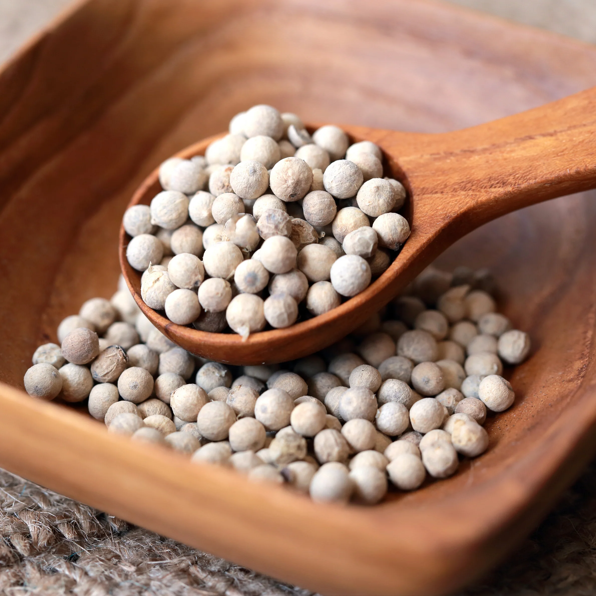

Minced Pork and Napa Cabbage Soup
ស៊ុបស្ពៃបូកគោ
Minced Pork and Napa Cabbage Soup is a comforting and flavorful Cambodian dish made with ground pork, napa cabbage, and a savory broth.
Ingredients
Ground Pork

200g
Buy NowNapa Cabbage

1/2 head
Buy NowGarlic

3 cloves
Buy NowGinger
1 inch piece
Buy NowChicken Broth

4 cups
Buy NowFish Sauce

2 tbsp
Buy NowWhite Pepper

1/2 tsp
Buy NowGreen Onions

2 stalks
Buy Now-
Step 1: Prepare ingredients
- Wash and cut napa cabbage
- Chop garlic and ginger
-
Step 2: Cook base
- Boil chicken broth
- Add garlic and ginger
-
Step 3: Add pork
- Add minced pork and stir gently
- Cook until fully done
-
Step 4: Add vegetables
- Add napa cabbage
- Cook until soft
-
Step 5: Season
- Add fish sauce and pepper
- Adjust taste
-
Step 6: Serve
- Top with green onions
- Serve hot